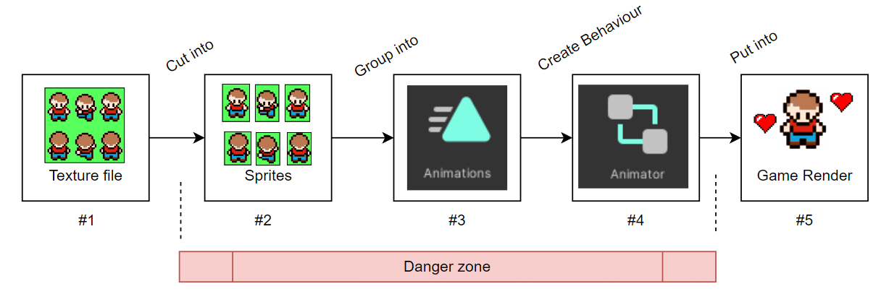
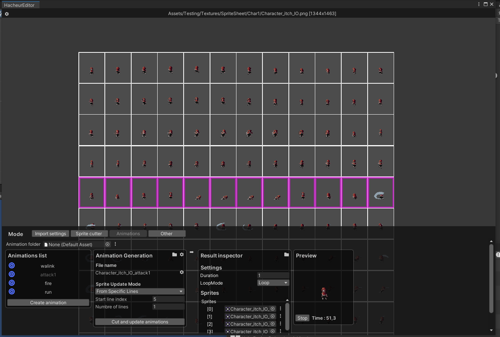

Logiked 2DTools
Le package Logiked2DTools permet de simplifier considérablement le travail avec des animation 2D utilisant des framsheets.
Les problèmes d'Unity
Si vous avez déja conçu un jeu mettant en place des animations en pixel art, vous aurez sans doute remarqué les lacunes d'unity. Voici le traîtement que vous aurez à faire pour obtenir des animation depuis une texture :

Ce qui fait perdre du temps
Devoir configurer l'import setting de chaque nouvelles textures.
Selectionner chaque sprite 1 à 1 pour le mettre dans une animation. En cas de modification de la spriteSheet, l'intergalité des animations sont à refaire de 0. De plus le système de "Keyframes" des animations Unity, originellement prévues pour de la 3D, ne sont vraiment pas pratique à utiliser pour des sprites.
Ensuite, il faut créer un animator et les transitions entre les animations dans Mecanim. Une fois encore, ce n'est pas pratique et ça prends du temps. Mecanim à été concu pour gérer de l'interpolation entre des animations 3D. Dans le cas d'une animation 2D, 90% des features sont inutiles. On passe plus de temps à désactiver des features qu'a en utiliser.
Toute la partie "Danger Zone" représente la partie la moins flexible de la chaîne. Si un jour, vous souhaitez modifier votre texture originale pour ajouter une frame ou modifier l'organisation de vos sprites, vous pouvez dire adieu à votre rendu. La plupars des étapes seront à refaire de zéro. Cela limite beaucoup le potentiel du système.
La solution proposée
Un système légér, pratique et super-flexible
On a créer notre propre pipeline de gestion des animations. En plus d'être ultra-permissive, elle permet de visualiser le résultat en temps reel. Voici ses 2 composantes principale.
Le Hacheur

Le hacheur s'ouvre avec Ctrl+h en selectionnant une texture, il permet de :
- Configurer l'import settings de la texture selon un presset configurable
- Configurer la découpe en X et Y de la texture
- Générer et organiser automatiquement les animation (du type Animation2DFile)
- Générer l'animator associé (du type AnimatorController2DFile)
L'Animatron

L'Animatron s'ouvre avec Logiked/Animatron Window en selectionnant un animator. Comme le système mechanim, il permet de :
- Configurer les liens entre les animation et leur transitions
- Visualisation en temps reel le rendu de l'animation de manière intuitive
issues hacheur: Identifier uniqueness violation: 'Name:_AttackNoMovement2_1_2, Type:Sprite, FileId:0'. Multiple Objects with the same FileId are generated by this Importer. There is no guarantee that subsequent imports of this asset will properly re-link to these targets.